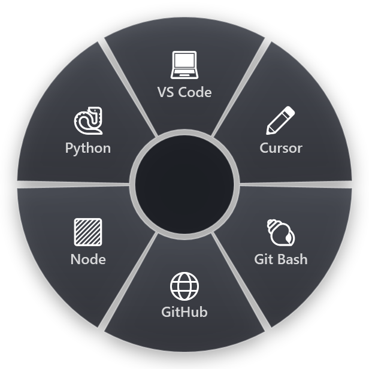

AutoHotkey is a free, open-source scripting language for Windows. People use it to create hotkeys for the keyboard and mouse, remap keys, set up autocorrect-style text replacements, and build macros that click and type for them. It is small, fast and very capable.
It is also a programming language. Every hotkey is a line of code, every macro is a script, and when something changes you open the script and fix it. Many people search for an "AutoHotkey alternative with a GUI" because they want the results without the code.
This guide is honest about both sides: when AutoHotkey is the right tool, and when a tool you set up with clicks will get you there sooner.
When AutoHotkey is the right choice
Stay with AutoHotkey, or learn it, if:
- You need logic. Conditions, loops, reading files, calling web APIs, parsing text with regular expressions. A script can do all of it.
- You want to remap keys. Turning Caps Lock into Esc, or a mouse button into a shortcut, is a one-line job in AutoHotkey.
- You like owning every detail. The script is a plain text file. Nothing runs that you did not write.
- You already have scripts that work. Rewriting working automation is rarely a good use of a Saturday.
Where scripts get in the way
The cost of scripting shows up in a few places:
- Remembering the hotkeys. Twenty scripts mean twenty shortcuts, and the ones you use once a week are the ones you forget.
- Maintenance. Programs change their menus and shortcuts. Screen scaling, a second monitor or a new laptop can break scripts that click at fixed positions.
- Sharing. Handing a script to a colleague means explaining how to install AutoHotkey, where to put the file and what each hotkey does.
- Version changes. AutoHotkey v2 changed the language compared with v1, so older scripts copied from forums often need rewriting.
None of this is a flaw in AutoHotkey. It is what comes with any code.
What a GUI tool can replace
A large share of everyday AutoHotkey scripts do one of five things. Each of these has a no-code equivalent:
- Send a keyboard shortcut that is awkward to press, such as Ctrl+Alt+V then V then Enter for paste values in Excel.
- Type a snippet: an email signature, a standard reply, an address.
- Open a program, file, folder or website.
- Run a command:
ipconfig /flushdns, a backup script, a Git command. - Chain a few of these with short waits in between.
What a GUI tool usually cannot do is the logic: branching on what is on the screen, loops, file parsing. If your script has an if that matters, keep the script.
Doing it in a radial menu instead
RadialDeck is a radial menu for Windows that we make. It covers those five jobs without code, and it solves the "remembering the hotkeys" problem a different way: instead of one shortcut per action, you hold one hotkey and pick the action by direction.
Each slice of the ring is one action, and you choose its type from a list:
- Send keys. Any shortcut, including sequences like Ctrl+Alt+V V Enter and media keys.
- Paste. A text snippet, pasted where the cursor is.
- Launch. A program, file, folder or URL. If the program is already open, it can switch to it instead.
- Command. PowerShell or cmd, with the selected files or the clipboard passed in.
- Transform. Change the copied text: plain text, UPPER or lower case, clean a link, pretty JSON, sort lines and more (32 in all).
- Macro (Pro). A short sequence of keys, pastes and waits, such as "Reply, wait, paste a template".
Rings per program replace per-program scripts
In AutoHotkey you write #HotIf WinActive("ahk_exe excel.exe") to make a hotkey work only in Excel. In RadialDeck you give the ring a program name (or a window title, or a regular expression) and the same hotkey opens that ring whenever Excel is in front. Outlook gets its ring, Explorer gets its ring, and the general ring appears everywhere else.

Ready-made instead of written
The gallery has 1,180 actions for 86 programs. Most of the AutoHotkey snippets people copy from forums for Excel, Outlook, Explorer or the terminal already exist there as a recipe you add with a click.
Sharing is a link
A ring can be shared as a link. The other person opens it, sees every slice and what it runs, changes the hotkey if they like, and only then saves it.
Using both
You do not have to choose. A common setup is to keep AutoHotkey for key remapping and the scripts with real logic, and put the everyday "send this, paste that, open this" jobs in a ring. A RadialDeck slice can even run your AutoHotkey script as a command, so the ring becomes the menu and the script does the work.
Getting started
- Write down the AutoHotkey hotkeys you actually use in a normal week. Most people find fewer than ten.
- Sort them: the ones with logic stay as scripts, the ones that send keys, paste text or open things move to a ring.
- Put the most-used action at the top of the ring, where it is easiest to reach.
- Use it for a week before adding more.
RadialDeck is free for two rings with every action except macros, and Pro (24 € a year, VAT included) adds macros, rings per program and nested rings, with a 14-day trial. It is in the Microsoft Store.
Try it in RadialDeck
Free for two rings, with a 14-day trial of everything in Pro. Windows 10 and 11, from the Microsoft Store.